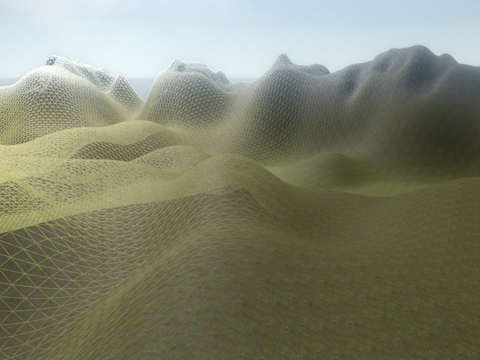

Heightfield Component

The HeightfieldComponent can be used for simple, heightmap based terrain, as well as for adding small details like piles of rubble to a scene.

The heightfield component uses an ImageData asset to get the height information. Consequently, the heightmap image has to be imported as such an asset type.
Collision Mesh
When the tag AutoColMesh is set on the owner game object, the component adds its mesh to the scene collision mesh, just like the greyboxing components. This is only supported for static game objects though.
Currently all triangles in the collision mesh will all use the same surface, the one set on the main material.
Properties
HeightfieldImage: The ImageData asset that contains the terrain height information.
Material: The single material used for the entire mesh. If you need multiple layers (grass, dirt, rock, etc) you can write a custom visual shader (TODO) that uses a mask texture to fetch and blend the various layers as desired.
HalfExtents: The size of the terrain in X and Y direction.
Height: How much to stretch the terrain along the up axis.
Tesselation: How densely to tesselate the graphics mesh.
TexCoordOffset, TexCoordScale: An offset and scale to shift and stretch the texture coordinates. Use a scale of one, if the material should be stretched once across the entire terrain. Use a large scale value instead, if the material should be repeated many times.
ColMeshTesselation: How densely to tesselate the physics mesh. It often makes sense to only use the half resolution of the graphics mesh.
Performance Considerations
-
Consider to deactivate casting shadows by removing the
CastShadowtag on the owner game object. It is rare that terrain has such prominent features, that they would be cast visible shadows. However, densely tesselated terrain meshes add a high cost to the shadow map update. -
Deactivate the collision mesh generation, if the terrain (or pile of rubble) is purely visual.